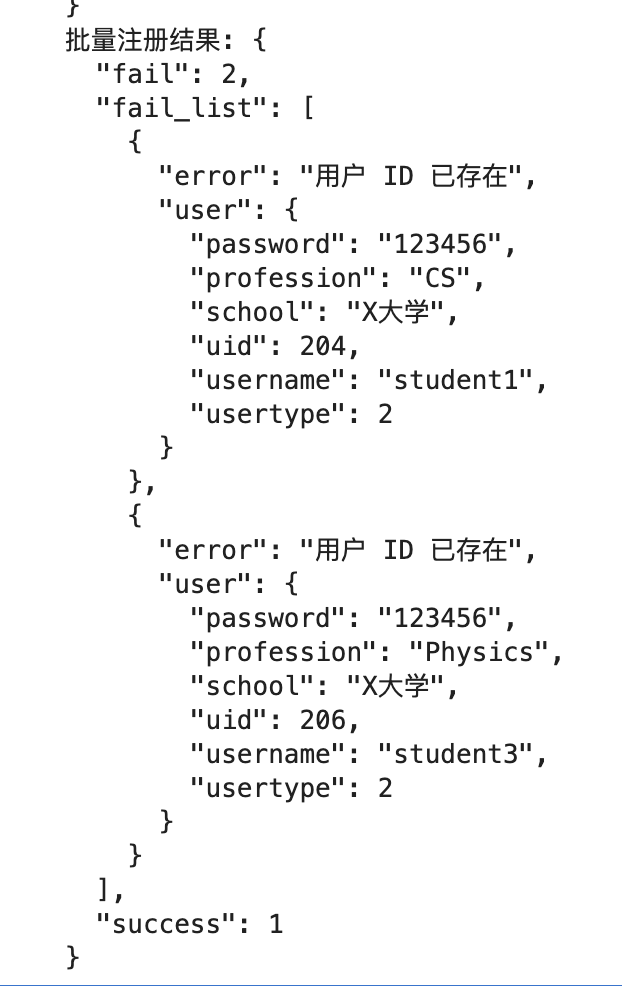

完成情况
后端进度
目前 git 的 commit 记录

-
删除了单独注册接口，和批量注册用一个接口
/api/register -
教师和学生的个人信息和课程建立联表，可以互相查询
-
统一退出登录或者修改密码后的默认 token_version 为随机 uuid

-
修复批量删除用户导致课程被删的 bug
-
统一了批量操作后端返回的 json 格式

-
删减了身份验证冗余代码（装饰器已经验证过了，但是函数里又验证了一次）
-
添加
/api/user_info接口，可以返回用户的基本信息（学号，用户名，签名，注册时间，相关课程……）
-
添加
/api/user_list接口，教师用户分页筛选查询用户，可以根据学号、用户名、专业、学校、课程模糊筛选 -
添加
/api/modify_user接口，可以批量修改学校、专业，批量添加或删除课程
-
添加
/api/modify_course接口，根据查询字符串参数判断新建或修改，管理员新建课程，分配初始的教师和学生，相关教师账号有修改课程的权限 -
添加
/api/course_list接口，和 user_list 类似，查询和当前用户相关的所有课程（管理员可以查看所有课程） -
添加
/api/course_info接口，返回课程的基本信息
-
添加
/api/delete_course接口，批量删除课程 -
申请了 GEMINI_API_KEY，配合 google-genai 包可以成功调用 gemini-2.5-flash

-
初步尝试建立题库，题库分了 legacy 和 coding，数据库的关系还没有确定下来，coding 类题暂定用 isolate 创建隔离环境

前端
进行了小部分的前端代码实现 简略学习了html5 css js vue以便后期更好的实现前端功能
明日目标
后端
- 完善 course，problemset，problem (legacy or coding) 之间的关系
- 基本实现教师创建题单，加入（或导入）题目，加入学生，学生在课程题单中提交评测传统问题的全流程的后端 api
- 如果还有富余的时间会尝试写判题机，先解决普通的文件对比类型的 judge
前端
实现并完善用户注册 用户登录 信息修改 注销登录的前端功能